00读前一分钟 · 全文脉络与本篇性格
把全文的 engage 家族逐个圈出来：
①❹ greater public engagement（名词，公众的参与度）
46 engagement in the subject（名词，后接 in ⟹「参与／从事（研究工作）」）
47 by engaging non-scientists directly in the research process（engage sb in sth ⟹「让非科学家直接参与研究过程」）
48 to engage the general public in their research（同上 ⟹「让公众参与他们的研究」）
⟹ 判据只有一条：engage 后面有没有 in。有 in ＝「（让……）参与」；没有 in、宾语是人，才轮到「吸引／雇用／与……交战」去争。本篇四次全带 in——一次也轮不到「吸引」。
⚠️ 黄皮书 47 的「初译试水」写的正是「通过吸引非科学家直接进入研究过程」，48 的初译是「吸引公众进入他们的研究」——书自己的初译把这个坑踩了两遍，疑难表误译栏也照写「吸引／雇用」。
46 have seen「看到」→ 时间作主语，「……里，发生了……」· move into「进入」→ 形成（与 convention 搭配）
47 overcome many of these challenges「克服很多这些挑战」→ 解决很多这样的难题（书导出换了动宾）
48 employed「雇用」→ 采用· making … into … → 做成
49 take … out of … and put it into the hands of …「取出来、放到手中」→ 从……转移到……手中· movement「活动」→ 运动
50 pool「池塘／收集」→ 整合· think outside the box「在盒子之外思考」→ 创新思维／跳出思维定式· around obstacles「围绕障碍」→ 绕过障碍· without the … boundaries「没有……界限」→ 不受……制约
⟹ 检查一句：译完把每个动词单独念——「看到惯例」「雇用方法」「围绕障碍」「在盒子外面」，念着别扭的就是 1 分块要扣的地方。
50 的结构其实最长（四个并列谓语 ＋ 目的 ＋ without 伴随），但只要把 without 转成「不受……制约」就顺了。
① 2023 翻译：③❺ 的 engaged「吸引参与」、49 的 employ「采用」——2025 把这对词一起搬进了 48 一句；2023 的营销行话表里写过「客户在哪里订婚／被雇用」这条误译。
② 2007 翻译熟词僻义表里有 conventions「规约」（不是「大会」）；2025 的 46 是 convention 第二次在画线里出场，这次取「惯例」——两次都不是「大会」。
③ 2021 翻译：二战后高等教育从精英走向大众、普及；本篇：科学从机构走向公众——两篇的骨架都是「准入门槛降低」；本篇 46 的 institutions such as a university 恰好就是 2021 篇的主角。
④ 2024 翻译（大象导航）的⑤❸⑥❷ 写的是研究者如何设计实验；本篇反过来写不是研究者的人怎样参与研究。
⑤ 同卷：新题型的彼得斯本职是儿童作家和诗人、拍蝴蝶是业余爱好（G 段 a keen amateur photographer）——②❹「连正规训练都不需要」的活例子；T2《科研的碳账》论证科研的碳排放是值得付的代价——一张卷子两篇谈科研：一篇问值不值，一篇问谁来做。
01原文精读
📄 原文是你的浏览器从原卷第 13 页识别出来的文字，下划线就是原卷的画线——考的只有带下划线的五段，淡蓝底的五句点一下跳到 02 节五步精讲；
蓝色虚线句点一下跳到 05 节长难句精析 ｜ 🟡 黄色虚线词 ＝ 重难点，点开右侧出卡片 ｜ 选中任意其他单词浮出「查有道」 ｜
每段「意」＝ 本页自写的意译（按句意转述，不是参考答案）｜「原卷对照」逐句看扫描原图、改识别错字。
⚠️ 先把五句在纸上写完再往下翻——上下文的用处是给画线句里的「这」「这些」定对象：②❶ 的三样东西（大数据、小团队、钱紧）就是 47 的 these challenges；⑤❶ 的 DIY 生物实验室就是 49 的 These groups of people；⑥❶ 的约 40 个自助式生物中心就是 50 的 They。三个指代词，答案全在紧挨着的上一句。
① 历史：公众参与由来已久 → 音乐家发现天王星 → 后来被机构垄断（46）→ 公民科学来破局
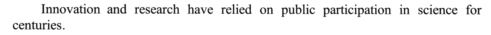
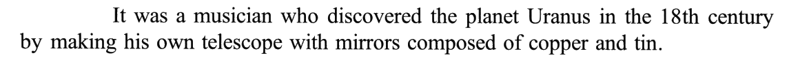
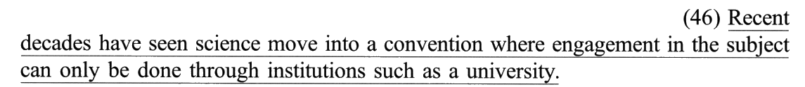
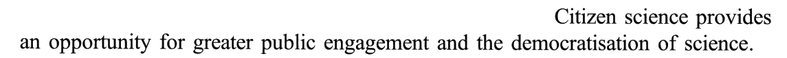
② 现在：三个难题 → 让公众参与来解决（47）→ 谁都能参加 → 门槛低到只要好奇心
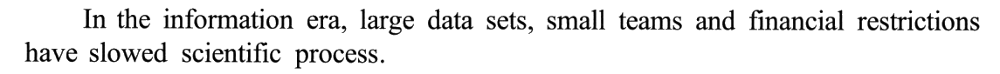
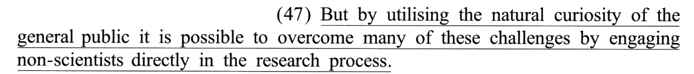
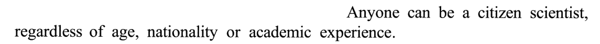
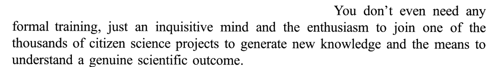
③ 做法：把研究「做成」游戏和应用（48）→ 请公众帮忙数、分、认
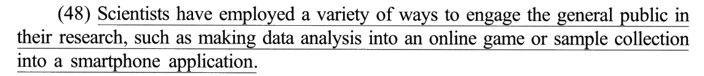
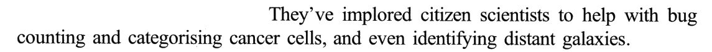
④ 意义：聪明人都能参赛 → 视野更宽、头脑更多 → 创新更快更有效
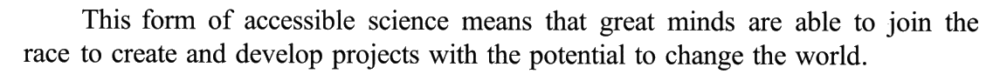
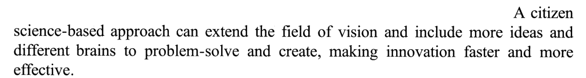
⑤ 例证引入：公民科学与 DIY 生物实验室同步兴起 → 一场社会运动（49）
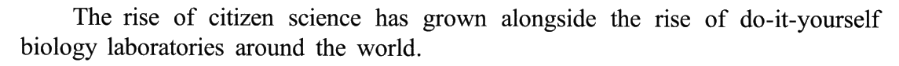
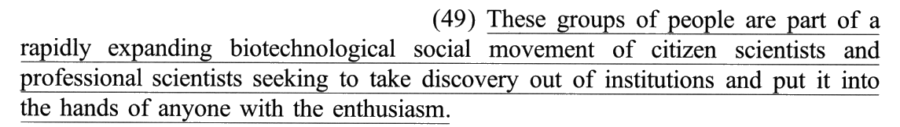
⑥ 例证展开：约 40 个中心 → 他们怎么做（50）→ 收尾一问：把培养皿搬进车库
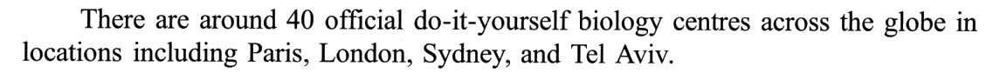
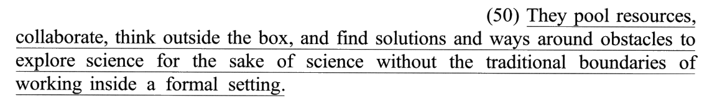
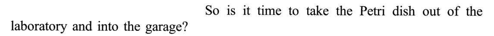
02逐句五步精讲 · 切分 → 初译 → 难点 → 词义 → 导出
每句五个标签页按考场上真实的动作顺序排；下方采分点逐个自评（点一次「得分」、再点一次「丢分」），
右上角实时结算本句得分，本页总分见下。参考译文默认折叠——先写完再翻。
📐 本年五句切 15 个采分块：10 个 0.5 分块 ＋ 5 个 1 分块，每句恰好「三块、一个 1 分」（十八年里第一次这么整齐；2024 是 17 块，2023 是 16 块）。1 分块的位置：46 首块（时间作主语 ＋ move into a convention）· 47 中块（形式主语 ＋ overcome these challenges）· 48 末块（such as ＋ 省略的 making）· 49 末块（seeking 的两个动作）· 50 首块（四个并列谓语）。
⭐ engage 家族压着 3 块 1.5 分：46 中块（engagement in the subject）· 47 末块（engaging … in）· 48 中块（engage … in）。
采分块的英文按结构关节用「｜」隔开（完整原句见每句上方的原卷句条）。「② 初译」页引自黄皮书的「初译试水」——本篇书上的初译几乎每句都留着一个字面直译（看到 · 吸引 · 雇用 · 取出来 · 在盒子之外 · 围绕），正好当反面教材；「⑤ 导出」页与折叠的参考译文以黄皮书为准。
切分眼：主语是时间、谓语是 see——这是「时间／地点 ＋ see ＋ 事件」的拟人句型，真正的主角是宾语 science，动作在宾补 move into 里。
⚠️ where 不是地点：先行词是 a convention（惯例），where ＝ in which ＝「在这个惯例中」——它是在解释惯例的内容，书用「即」引出。
📐 三块 1／0.5／0.5：主句一块就占 1 分——have seen 与 move into a convention 两个词都要换掉字面义；定从主语一块（压 engagement in the subject）；「只能通过大学这样的机构」一块。
这份初译是黄皮书自己的「试水稿」：四处病全是字面义——正是本篇第二性格。
- ⭐⭐ 「时间 ＋ have seen ＋ sb do sth」：时间降为状语、宾语升为主语、宾补变谓语。 📕 难点 (1)：该结构描述某一时段内某人／某物发生了某种变化，翻译时调整语序 ⟹「最近几十年里，科学领域已形成一种惯例」。书例：Yesterday saw the resignation of the chief financial officer.「昨天，首席财政长官辞职了。」
- ⭐ where 定从较长，不做「的」字定语，另起小句；where ＝ in which ＝「在这一惯例中」，可酌情译「即」。 📕 难点 (2)。写成「……形成了一种只有通过大学这样的机构才能从事研究工作的惯例」——定语太长，读着喘不过气。
- such as 同位语较短，前置成「大学这样的（机构）」。 📕 难点 (3)：较短时可前置翻译，整体处理为「……这样的」。对照 48：同样是 such as，那里和被修饰词之间隔着长目的状语，就不能前置。
- can only be done：被动不必译「被」，转成「只有……才能」。 📕 导出「只有通过……才能从事研究工作」——only 修饰 through 短语，中文「只有……才……」正好把它挪到状语前。
- have seen —— 📕 see 常见义「看见；看到」，此处主语是时间 Recent decades，取僻义「历经；目睹；为……发生之时」。
- move into —— 📕 本义「搬进；移入」，引申为「进入某种状态、阶段或角色」，与 convention 搭配调为「形成」。误译栏：「进入」。
- convention —— 📕 有「大会；集会」「公约；协定」「常规；惯例」等义，结合语境取「常规；惯例」。误译栏：「会议／公约」。
- engagement in the subject —— 📕 初译时很容易以为 subject 是「（大学所学的）学科、科目」，书认为此处 subject 应取「主题；课题」，整个短语译「参与／从事研究工作」。误译栏：「参与这一话题／学科」。（书的判据见 04 节商榷 1。）
- institutions —— 「机构」；与 a university 同位，这里专指科研／学术机构。
| 疑难点 | 正译 | 误译 |
|---|---|---|
| move into | 形成 | 进入 |
| convention | 惯例 | 会议／公约 |
| engagement in the subject | 参与／从事研究工作 | 参与这一话题／学科 |
最近几十年里，科学领域已形成一种惯例，即只有通过大学这样的机构才能从事研究工作。
导出动作三个：① 时间降为状语：「最近几十年里」；② 看到 → 形成：「科学领域已形成一种惯例」（have 的完成意味落在「已」）；③ where 另起：「即只有……才能……」。
检查一句：译文的主语是「几十年」还是「科学」？是「几十年」，第一块 1 分就没了。
🧪 Claude 盲译：近几十年来，科学逐渐形成了一种惯例：参与这门学科（的研究）只能通过大学之类的机构来进行。
切分眼：句首的 by 短语后面没有逗号，直接撞上 it is possible——读的时候先在 public 后面自己画一刀，否则会以为 public it 连在一起。
⚠️ these challenges 往回找：②❶ 的三样——大数据集、小团队、资金限制。书导出把 challenges 落成「难题」，「这样的」就是回指。
📐 三块 0.5／1／0.5：1 分压在中间的主干——形式主语怎么处理、overcome challenges 怎么搭配都在这一块。
本篇第一次「吸引」出场——书的初译就写了「吸引」，疑难表把它列进误译栏。48 还会再来一次。
- ⭐ it is possible to do：可按原语序、增译逻辑主语「我们」（我们有可能……），或真正主语前置「做某事是可能的」。 📕 难点 (1)。书导出选了第三条路：「……，就有可能……」——前面两个方式状语当条件，主语干脆省掉。
- ⭐⭐ 两个方式状语都是 by ＋ doing：都置于主干前，为避免赘述，两个 by 只译出一个，或都不直接译出，靠隐含逻辑表达。 📕 难点 (2)。书导出两个都没译「通过」：「利用……，让……，就有可能……」——动词本身（利用、让）已经带着手段的意思。
- engaging non-scientists directly in：「让非科学家直接参与」，directly 跟着「参与」走。 📕 词义 (3)：engage sb in sth 表示「使某人从事／参加……」。
- natural —— 📕 描述自然界中未经人工修饰或加工的事物（rubber、scenery、lake）时意为「自然的；天然的」，描述人的性格或行为（smile）时意为「不拘束的；不做作的」，描述特质／本能（talent、ability、curiosity）时意为「天生的；与生俱来的」。
- curiosity —— 📕 派生自形容词 curious「求知欲强的；好奇的」，意为「好奇心；求知欲」。
- engaging … in —— 📕 engage 有多种含义：「吸引（注意力、兴趣）」「雇用、聘用（某人）」「与（某人）交战」「与（某人）建立密切关系」等；engage sb in sth ＝「使某人从事／参加……」⟹「让非科学家直接参与……」。
- utilising —— 「利用」；英式拼写（-ise），美式 utilizing。
- overcome … challenges —— 书导出「解决……难题」；「克服……挑战」意思也对，但中文「挑战」更常搭「应对」，「难题」搭「解决」更顺。
| 疑难点 | 正译 | 误译 |
|---|---|---|
| natural curiosity | 天生的／与生俱来的好奇心 | 自然的好奇心 |
| engaging non-scientists directly in the research process | 让非科学家直接参与研究过程 | 吸引／雇用非科学家直接进入研究过程 |
但是，利用公众天生的好奇心，让非科学家直接参与研究过程，就有可能解决很多这样的难题。
导出动作三个：① 两个 by 都不译「通过」，动词「利用」「让」直接打头；② 形式主语不译，「就有可能……」收尾；③ these 落「这样的」：「很多这样的难题」。
检查一句：译文里有几个「通过」？两个就啰嗦，零个最好；写了「吸引」，末块 0.5 危险。
🧪 Claude 盲译：但是，通过利用普通大众天生的好奇心，让非科学家直接参与到研究过程中来，就有可能克服其中许多挑战。
切分眼：or 后面只剩「名词 ＋ into ＋ 名词」——和前面 data analysis into an online game 一模一样的骨架，所以缺的就是 making。
⚠️ such as 修饰的是 ways（方法），不是 research：举的两个例子都是「方法」，不是「研究」。
📐 三块 0.5／0.5／1：1 分压在最长的同位语——make A into B 的译法 ＋ 省略补全。
一句话两个「雇人」的词：employ 的本义是雇人，engage 的一个义项也是雇人——宾语一个是 ways、一个带 in，两个都轮不到「雇用」。
- ⭐ 不定式作目的状语：通常译「来／以／去／让……」，有时可省略。 📕 难点 (1)。书例 I’ve tried lots of different ways to lose weight.「我已经试过很多种方法来减肥。」本句导出用「让」——engage sb in 的「让某人参与」正好吃掉了「来」。
- ⭐⭐ such as 引导的同位语与 ways 之间隔着较长的目的状语，不宜以「……这样的」结构前置，按英文语序单独译出，前面用逗号隔开：「如……」。 📕 难点 (2)。对照 46：institutions such as a university 紧挨着、又短 ⟹ 前置「大学这样的机构」；本句隔得远、又长 ⟹ 后置「如……」。同一篇里的两个 such as，两种处理。
- or 后省略了 making，中文要补回「将」：「如将……做成……，或将……做成……」。 📕 导出两个「将」都写出来了。只写一个「将数据分析做成网络游戏或样本采集做成手机应用」——读起来像「样本采集」是第二个宾语，结构就塌了。
- employed —— 📕 employ 的常用义为「雇用；聘用」，宾语是「人」，如 employ sb as sth／employ sb to do sth；本句宾语为 a variety of ways，故推测该词在句中应表示「运用；采用」。误译栏：「雇用」。
- engage —— 📕 常用义为「吸引（兴趣或注意力）」「雇用；聘用」，句中以短语搭配 engage sb in sth 的形式出现，表示「让某人参与某事」。误译栏：「吸引公众参进入他们的研究」。
- make A into B —— 「把 A 做成／变成 B」；into 表示结果。
- sample collection —— 「样本采集」；collection 不是「收藏、收集品」，是「采集」这个动作。
- smartphone application —— 「智能手机应用程序」，口语 app。
| 疑难点 | 正译 | 误译 |
|---|---|---|
| employed | 运用；采用 | 雇用 |
| engage the general public in their research | 让公众参与他们的研究 | 吸引公众参进入他们的研究 |
科学家采用了各种方法让公众参与他们的研究，如将数据分析做成网络游戏，或将样本采集做成智能手机应用程序。
导出动作三个：① employed → 采用；② engage … in → 让……参与（目的状语里的「来」被「让」吃掉）；③ such as 后置「如……」、两个「将」都写出。
检查一句：这句里有没有出现「雇」字或「吸引」？出现一个就是 0.5。
🧪 Claude 盲译：科学家们已采用多种方式让公众参与到他们的研究中来，比如把数据分析做成网络游戏，或把样本采集做成智能手机应用程序。
切分眼：三个后置定语一层套一层，最后的 seeking 挂在离它最近的 scientists 上（是人在「努力」，运动不会努力）。
⚠️ it ＝ discovery；the enthusiasm 的定冠词回指——就是对科学发现的热情，书译「对此抱有热情」。
📐 三块 0.5／0.5／1：1 分压在 seeking 一块——seek 的词义 ＋ take … out of／put … into the hands of 的意译。
初译的「他们」也有问题：「他们」指「这群人」还是「科学家」？拆句时要把主语写成名词：「参与其中的公民科学家和专业科学家」。
- ⭐⭐ A are part of a movement of B and C seeking to do sth：关系较复杂，为使表意清晰，拆分译为「A 是一场……运动的组成部分，参与其中的 B 和 C 努力……」。 📕 难点 (1)。「参与其中的」三个字是关键——它把定语 2（of B and C）从「运动的」变成了第二句的主语，三层定语一下子拆开了。
- These groups of people 指代上句提及的群体，译「这些群体」。 📕 难点 (2)。上句是⑤❶ 的 DIY 生物实验室——「这些群体」就是在这些实验室里活动的人。
- take … out of … and put it into the hands of …：两个动作合成一个「转移」，「将科学发现的机会从科研机构转移到……手中」。 📕 导出。书增译了「的机会」（discovery 是「发现」这件事，转移的是做发现的机会）——见 04 节商榷 2；「让科学发现走出机构、交到……手中」也通。
- expanding —— 📕 动词 expand 意为「扩展；发展」，现在分词 expanding 表示「扩展的；发展的」；expanding movement 指该运动的影响越来越大、参与人员越来越多，故 rapidly expanding 译为「发展迅速的」。
- movement —— 📕 基本义为「（身体部位的）运动；活动」，结合修饰词 biotechnological social，取「（具有共同思想或目标的）运动」。误译栏：「社会活动；社会移动」。
- seeking —— 📕 seek 有「寻找」「寻求」「请求」等含义，此处 seek to do sth 为固定搭配，意为「设法／努力做某事」。误译栏：「寻找；请求」。
- biotechnological —— 「生物技术的」，bio-（生命）＋ technological。
- anyone with the enthusiasm —— 「任何对此抱有热情的人」；with 表「具有」。
| 疑难点 | 正译 | 误译 |
|---|---|---|
| social movement | 社会运动 | 社会活动；社会移动 |
| seeking to | 设法／努力 | 寻找；请求 |
这些群体是一场发展迅速的生物技术社会运动的组成部分，参与其中的公民科学家和专业科学家努力将科学发现的机会从科研机构转移到任何对此抱有热情的人手中。
导出动作三个：① 拆句：「……的组成部分，参与其中的……」；② 两个僻义：movement 运动、seek to 努力；③ 两个动作合一：take out ＋ put into ⟹「从……转移到……手中」。
检查一句：前半句里有几个「的」？超过三个，就是没拆。
🧪 Claude 盲译：这些群体是一场迅速发展的生物技术社会运动的一部分，这场运动由公民科学家和专业科学家组成，他们力图让科学发现走出（专业）机构，交到任何怀有热情的人手中。
切分眼：around obstacles 只修饰 ways，不修饰 solutions——「解决办法」和「绕过障碍的途径」是两样东西；obstacles to explore 看着像「探索的障碍」，其实 to explore 是整句的目的状语（书切分②）。
⚠️ They 往回找：⑥❶ 的 around 40 official do-it-yourself biology centres（书难点 (1)）。
📐 三块 1／0.5／0.5：1 分压在主干——四个谓语里有三个要意译（pool · think outside the box · ways around）。
四个字面词，一个都不能留——这就是本篇第二性格最集中的一句。
- 代词 They 指 around 40 official do-it-yourself biology centres，可译「他们」或「这些官方的自助式生物中心」。 📕 难点 (1)。中心是机构，「他们」指中心里的人——中文用「他们」比「它们」顺。
- ⭐ 目的状语里又套了表目的的 for the sake of：为避免语言重复，整体处理为「以便……，为了……」。 📕 难点 (2)。不能写成「为了为了科学而探索科学」——一个「以便」、一个「为了」，各管一层。
- ⭐⭐ without 引导伴随状语「在没有……的情况下」，根据 boundaries（界限／制约）转换词性，译「不受……的传统制约」。 📕 难点 (3)。名词 boundaries → 动词「不受……制约」：中文不爱说「没有界限」，爱说「不受约束」。
- pool —— 📕 常用作名词，意为「池塘」或「游泳池」，在本句中作动词，根据宾语 resources 可推知其应取僻义「集中，共享（资源等）」，pool resources 可译为「整合资源」。
- think outside the box —— 📕 字面义为「在盒子之外思考」，引申义为「跳出固有的思维模式；创新思维」，即以不同寻常、非传统或新的角度思考问题。误译栏：「在盒子之外思考」。
- around —— 📕 常用义为「围绕；环绕」，此处根据前后的单词 (ways) around (obstacles) 可调整译为「绕过；跨越；克服」。误译栏：「围绕障碍」。
- working inside a formal setting —— 📕 work 本意为「工作；劳动」，此处指「进行科学工作」，setting 意为「环境；场景」⟹「在正规环境里工作」。
- for the sake of —— 「为了……起见；因……的缘故」；for the sake of science「为科学本身」——不图名利、不为发表。
| 疑难点 | 正译 | 误译 |
|---|---|---|
| think outside the box | 跳出思维定式／创新思维 | 在盒子之外思考 |
| around obstacles | 绕过障碍 | 围绕障碍 |
他们整合资源，通力合作，创新思维，寻找解决问题的办法和绕过障碍的途径，以便不受在正规环境里工作的传统制约，为了科学而探索科学。
导出动作三个：① 四个谓语四字化：整合资源 · 通力合作 · 创新思维 · 寻找……；② without 转「不受……制约」；③ 两层目的「以便……，为了……」——书把伴随状语并进「以便」，语序也调了（「不受制约」放在「探索科学」之前）。
检查一句：「盒子」「围绕」「池」三个字有没有出现在译文里？出现任何一个，首块 1 分危险。
🧪 Claude 盲译：他们集中资源、通力合作、跳出思维定式，寻找解决问题的办法和绕开障碍的途径，为科学而探索科学，不受在正规环境中工作的传统界限束缚。
03⚠️ 本篇内核：「engage 四遍」与「字面 vs 引申」清算表（53 处）
黄皮书五张「正译 vs 误译」表（11 行）＋ 五节「难点突破／词义确定」＋ 段落对照译文里的关键词全部收进——53 行的「正译」全部能在书上找到出处（判据栏标 📕：疑难表／难点／词义／导出／段落对照译文）；「误译」栏书上没列的格子，是本页补的最常见错法。
点「默写模式」把「正译」栏盖住，逐格点开自查。
⚠️ 这张表有两种行：「本义是雇人」行（engage／employ——宾语换了，意思就换了）和「字面动作」行（see／move into／pool／box／around／take out——中文要换成抽象的说法）。
📌 本表最值得记的一组：engage 四遍四个落点——参与度 · 从事 · 让……参与 · 让……参与；判据是后面带不带 in。2023 的 where the customer can be engaged（不带 in，被动）书落「吸引参与」——不带 in 时才轮到「吸引」。
| 词／表达 | 正译（本文语境） | 误译（最常见） | 判据 |
|---|---|---|---|
| public engagement（①❹） | 公众参与度 | 公众订婚；公众雇用 | ①❹ 📕 段落译文「提升公众参与度」 |
| engagement in the subject | 参与／从事研究工作 | 参与这一话题／学科 | 46 📕 疑难表 |
| engaging non-scientists directly in | 让非科学家直接参与 | 吸引／雇用非科学家直接进入 | 47 📕 疑难表 |
| engage the general public in | 让公众参与 | 吸引公众进入 | 48 📕 疑难表 |
| employed（a variety of ways） | 运用；采用 | 雇用 | 48 📕 疑难表：宾语是 ways 不是人 |
| Recent decades have seen | 最近几十年里，（……发生了） | 近几十年已经看到 | 46 📕 难点 (1)：时间作主语 |
| move into (a convention) | 形成 | 进入 | 46 📕 疑难表 |
| convention | 惯例；常规 | 会议；公约 | 46 📕 疑难表 |
| where（46） | 即 | 在这个地方 | 46 📕 难点 (2)：where ＝ in this convention |
| institutions such as a university | 大学这样的机构 | 机构，例如大学（拖尾） | 46 📕 难点 (3)：短同位语前置 |
| natural curiosity | 天生的／与生俱来的好奇心 | 自然的好奇心 | 47 📕 疑难表 |
| it is possible to | 就有可能…… | 它是可能的 | 47 📕 难点 (1)：形式主语 |
| by …, … by …（两个 by） | 利用……，让……，（不译「通过」） | 通过……，通过…… | 47 📕 难点 (2)：避免赘述 |
| overcome many of these challenges | 解决很多这样的难题 | 克服很多这些挑战 | 47 📕 导出 |
| to engage …（目的状语） | （采用方法）让…… | 为了去吸引…… | 48 📕 难点 (1)：来／以／去／让 |
| such as making …（48） | ，如……（后置） | ……这样的各种方法（前置） | 48 📕 难点 (2)：隔着目的状语 |
| or sample collection into … | 或将样本采集做成…… | 或样本采集成为…… | 48 📕 导出：补回 making |
| online game | 网络游戏 | 在线比赛 | 48 📕 导出 |
| These groups of people | 这些群体 | 这几组人 | 49 📕 难点 (2) |
| A are part of a movement of B and C seeking … | A 是一场……运动的组成部分，参与其中的 B 和 C 努力…… | A 是 B 和 C 的……运动的一部分（不拆） | 49 📕 难点 (1)：拆句 |
| rapidly expanding | 发展迅速的 | 迅速扩大的；膨胀的 | 49 📕 词义 (1) |
| social movement | 社会运动 | 社会活动；社会移动 | 49 📕 疑难表 |
| seeking to | 设法／努力 | 寻找；请求 | 49 📕 疑难表 |
| take … out of … and put it into the hands of … | 将……从……转移到……手中 | 从……取出来、放到……手里 | 49 📕 导出 |
| anyone with the enthusiasm | 任何对此抱有热情的人 | 任何带着热情的人 | 49 📕 导出 |
| They（50） | 他们（这些自助式生物中心） | 它们（读成实验室器材） | 50 📕 难点 (1) |
| pool resources | 整合资源 | 池塘资源；收集资源 | 50 📕 词义 (1) |
| think outside the box | 跳出思维定式／创新思维 | 在盒子之外思考 | 50 📕 疑难表 |
| ways around obstacles | 绕过障碍的途径 | 围绕障碍的方式 | 50 📕 疑难表 |
| to explore … for the sake of … | 以便……，为了科学而探索科学 | 为了为了科学去探索科学 | 50 📕 难点 (2) |
| without the traditional boundaries | 不受……的传统制约 | 没有……的传统界限 | 50 📕 难点 (3)：转换词性 |
| working inside a formal setting | 在正规环境里工作 | 在正式布景里劳动 | 50 📕 词义 (4) |
| relied on public participation | 一直依赖于公众（在科学方面）的参与 | 依靠公共参加 | ①❶ 📕 段落译文 |
| It was a musician who … | 正是一位音乐家…… | 它是一位音乐家，他…… | ①❷ 📕 段落译文：强调句 |
| mirrors composed of copper and tin | 铜锡合金镜面 | 由铜和锡组成的镜子们 | ①❷ 📕 段落译文 |
| democratisation of science | 科学大众化 | 科学的民主政治 | ①❹ 📕 段落译文「推动科学大众化」 |
| small teams | 规模小的团队 | 小队 | ②❶ 📕 段落译文 |
| have slowed scientific process | 减缓了科学进程 | 让科学过程变慢 | ②❶ 📕 段落译文 |
| academic experience | 学术经验 | 学院经历 | ②❸ 📕 段落译文「学术经验多寡」 |
| an inquisitive mind | 好奇之心 | 爱打听的头脑（贬） | ②❹ 📕 段落译文「葆有好奇之心」 |
| the means to understand | 理解……的方法 | 理解的意思 | ②❹ 📕 段落译文 |
| genuine scientific outcome | 真正的科学成果 | 真诚的科学结局 | ②❹ 📕 段落译文 |
| implored | 恳请 | 命令；暗示 | ③❷ 📕 段落译文 |
| bug counting | 统计昆虫数量 | 数漏洞 | ③❷ 📕 段落译文：bug ≠ 程序漏洞 |
| accessible science | 易于参与的科学（形式） | 可进入的科学 | ④❶ 📕 段落译文 |
| great minds | 有识之士 | 伟大的头脑们 | ④❶ 📕 段落译文 |
| join the race | 加入角逐，争相…… | 参加赛跑 | ④❶ 📕 段落译文 |
| extend the field of vision | 拓宽视野 | 延长视觉的田野 | ④❷ 📕 段落译文 |
| different brains | 各种智慧 | 不同的大脑 | ④❷ 📕 段落译文 |
| has grown alongside | 与……相伴而生 | 在……旁边长大 | ⑤❶ 📕 段落译文 |
| do-it-yourself biology laboratories | 自助式生物实验室 | 自己做的生物学实验室 | ⑤❶ 📕 段落译文 |
| official | 官方的 | 官员 | ⑥❶ 📕 段落译文 |
| Petri dish | 培养皿 | 佩特里盘子 | ⑥❸ 📕 段落译文 |
04考场流程：翻译五步法（20 分钟怎么花）＋ 盲译对照
- 通读全文 ＋ 标「这／这些」（2 分钟）—— 六段读一遍，把 these／These／They 三个指代词连到上一句：47 these challenges ← ②❶ 三样难题；49 These groups ← ⑤❶ DIY 实验室；50 They ← ⑥❶ 四十个中心。 本篇三个指代词的答案都紧挨在上一句，不用像 2024 那样动用「主角刀」。
- 结构切分（顺手圈 engage）—— 先找谓语动词定主干，同时把 engage 家族全部圈出来，看后面带不带 in。本篇四次全带。 结构难度从低到高：48（主谓宾＋目的＋同位）→ 47（形式主语＋两个 by）→ 46（时间作主语＋where）→ 50（四个谓语＋目的＋without）→ 49（三层后置定语，要拆）。
- 初译试水（每句 45 秒）—— 按块直译。每个字面动作先打个问号：看到？ 进入？ 雇用？ 取出来？ 盒子？ 围绕？——导出时逐个换掉。
- 词义确定（每句 1 分钟）—— 专查两类词：① 本义是雇人的（engage · employ）——看宾语与介词；② 字面是物理动作的（see · move into · pool · take out · put into · around）——看搭配对象是不是抽象名词。搭配对象抽象，动词就取抽象义（2007 页立过的判词法）。
- 译文导出（每句 45 秒）—— 46 时间降为状语、where 用「即」；47 两个 by 不译「通过」；48 such as 后置、补第二个「将」；49 拆句「参与其中的」；50 without 转「不受……制约」。
engage：带 in（engage sb in sth／engagement in）⟹「（让……）参与、从事」；不带 in、宾语是人 ⟹「吸引（注意力）／雇用」；宾语是敌人 ⟹「交战」。
employ：宾语是人 ⟹「雇用」；宾语是方法、技术、手段（ways · methods · machine learning）⟹「采用、运用」。
⟹ 动作：遇到这两个词，先把宾语和介词圈出来再落笔；2023、2025 两年连考，2026 不考才怪。
黄皮书五份初译里这些词全是字面义——书故意把它们留在初译里，就是要你在「词义确定」这一步把它们一个个换掉。
⟹ 动作：初译写完，把动词和它的宾语单独连起来念：「几十年看到」「进入惯例」「雇用方法」「取出发现」——不像中文的地方，就是要换词的地方。
48 a variety of ways to engage …, such as making …：中间隔着八个词的目的状语，同位语本身又有十几个词 ⟹ 后置「，如……」。
⟹ 动作：遇到 such as 先数两件事——离先行词多远、自己多长。近而短就前置，远或长就后置。
① 46 写「参与这门学科（的研究）」——书正译栏是「参与／从事研究工作」，误译栏列了「学科」。按书的口径「学科」危险；但我加了括号「的研究」，意思已经落到「研究」上，见下方商榷 1；
② 49 写「这场运动由公民科学家和专业科学家组成，他们力图……」——拆句方向与书一致，但多拆了一层（书一个「参与其中的」就把两层并了），稍啰嗦，不扣分。
另：47 写了「通过利用」——一个「通过」不啰嗦，不扣分；50 写「跳出思维定式」与书正译栏一致，语序保留了原文（先探索、后不受束缚），书把「不受制约」提前了，两种都对。
盲译犹豫过的四处（mine 里照实写了）：46 have seen 不译「见证」、47 两个 by 的层次、48 or 后省略 making、49 seeking 挂谁——四处判断与书一致。
商榷 2 · 49 书增译「的机会」：原文是 take discovery out of institutions，书译「将科学发现的机会从科研机构转移到」——discovery 指「发现」这件事本身，书补「机会」是为了让「转移」有个可以转移的对象。不补也通：「让科学发现走出科研机构，交到……手中」。
商榷 3 · 50 的语序：原文 to explore … without …，without 是伴随状语；书导出「以便不受……制约，为了科学而探索科学」把伴随并进了目的、并提到前面。按原文顺序「为科学而探索科学，不受……束缚」同样得分。
存疑 · ②❶ scientific process：「减慢科学过程」在英文里不太常见（更常说 progress 进展）；书译「科学进程」两头都能接住，读的时候不必纠结。
字数：书标 395 词＝识别层逐词计数 395（2024 页书标 401、计数 396）。
背景 · 那位音乐家：①❷ 说的是威廉·赫歇尔——德国汉诺威出生、1766 年起在英国巴斯当乐师，写过二十多部交响曲；他自己磨制镜铜（speculum metal，约三分之二铜、三分之一锡）反射镜，1781 年 3 月 13 日夜里在巴斯自家花园用一台七英尺反射望远镜发现了天王星——第一颗用望远镜发现的行星。
⭐ 首尾呼应：开头是业余爱好者在自家花园造望远镜发现行星，结尾问要不要把培养皿搬进车库——全文从「科学在家里」走到「科学被关进机构」（46），再走回「科学回到家里」。培养皿 Petri dish 以 19 世纪德国细菌学家 Julius Petri 命名。
原刊 How It Works 2020-03-09 一文未检索到在线页面，来源按黄皮书。
05非画线长难句 7 句（画线句之外，这几句也是考点）
黄皮书本篇没有长难句栏目（2025 的 T1、新题型精讲也没有），以下 100% 自选自撰，译文为本页自译（黄皮书段落对照译文只作交叉参考）。选的标准：这一句要么给画线句定了指代或语境，要么自己就是一个结构样本。原句与 01 节同一条（本机识别成文字，可切回原卷）。
📌 全文最长的一句不在画线内：②❹ 37 词，与 49 并列第一——命题人没挑它，但它是最好的省略练习。
⭐ 强调句的判据：去掉 It was … who，剩下 a musician discovered the planet Uranus …，句子完整 ⟹ 强调句；中文「正是……」「……的，是……」。📕 段落译文「正是一位音乐家……发现了天王星」。
⭐ 为什么强调「音乐家」：①❶ 说研究一直靠公众参与，这里拿一个「外行」做例子——强调的正是「不是科学家」这一点，和 47 的 non-scientists 呼应。
⚠️ composed of「由……构成」，过去分词后置；his own「他自己的」——这里落「亲手（造）」。
⭐ 这一句就是 47 的 these challenges：三个并列主语＝三个难题。47 的 1 分块里「这样的难题」能不能译出「这样」，全看你读没读这一句。
⭐ 无灵主语：三个「东西」当主语去「拖慢」科学——中文照样能说「……拖慢了……」，不必改成「由于……，科学变慢了」。
⚠️ small teams 也是难题？——团队小、人手不够，所以才要请公众来帮忙数据分析。三个难题正好对应 48 的两个办法（数据分析做成游戏、样本采集做成应用）。
⭐⭐ 最难的是第二个 to 的身份：to generate new knowledge and the means to understand——generate 的宾语是 new knowledge 和 the means 两样（产生新知识、产生理解科学成果的方法），而不是「产生新知识，以及（拥有）理解的方法」。📕 段落译文：「就能帮助创造新知识并形成理解真正的科学成果的方法」——书把 generate 拆成「创造」和「形成」两个动词，分别配两个宾语。
⚠️ just 后面省了 you need——中文补「只需」。an inquisitive mind 书译「好奇之心」，别写「爱打听的头脑」（inquisitive 有时带贬义「爱管闲事」，这里是褒义）。
⭐ 三个动作从易到难：数虫子（生物）→ 分癌细胞（医学）→ 认星系（天文）——一句话把公民科学的三大领域扫了一遍，even 标出最难的那个。
⚠️ bug counting：bug 在这里是「虫子」不是「程序漏洞」；名词 ＋ 动名词构成复合名词，「统计昆虫数量」。implored「恳求」比 asked 重得多——科学家真的需要人手。
⭐ 句末 making … 是结果状语（逗号 ＋ 现在分词）：中文「从而……」。📕 段落译文正是「从而使创新更迅速、更有效」。
⭐ science-based「以……为基础的」；different brains 书译「各种智慧」——brains 借代「聪明人」，别译「不同的大脑」。problem-solve 是动词化的复合词「解决问题」。
⭐ 这一句是 49 的 These groups of people 的先行语：群体＝在这些 DIY 生物实验室里的人。
⭐ The rise … has grown：「兴起在增长」字面不通——名词化主语 ＋ 弱动词，中文把重心放在 alongside 上：「与……相伴而生」（📕 段落译文）。两个 rise 中文可以只说一次，或者像本页这样两个都说「兴起」以示对仗。
⭐ 和 49 的 take discovery out of institutions and put it into the hands of … 是同一个骨架：「从 A 拿出来 ＋ 放到 B」——49 是正式说法，这里是形象说法（实验室→车库）。读懂这一句，49 的「转移」就不会译成「取出来」。
⭐ 车库是美国 DIY 文化的象征（很多科技公司从车库起家）；和①❷ 赫歇尔在自家花园造望远镜首尾呼应。is it time to「是时候……了吗」，设问不求回答，作者的态度是「是的」。
06写作素材抽取（话题：科学普及 · 公众参与 · 创新 · 好奇心与热情）
本篇是一段「历史 → 现状与难题 → 办法 → 意义 → 例证 → 设问」的标准议论文骨架，话题又是「全民参与／门槛降低」——大作文的「科技 · 教育 · 社会参与」三类题都用得上。 每组给「本文短语 → 可迁移骨架 → 自拟例句」；例句全部自拟，只借骨架。⚠️ 本年作文题本轮未看（作文仍全盲），翻译与大作文撞不撞题留到作文页核。
骨架：Recent years have seen X do Y.
自拟：Recent years have seen more and more young people choose to work in rural areas.（近年来，越来越多的年轻人选择到农村工作。）
大作文第一段描述图表趋势、第二段铺背景，都能用；比 There is a trend that … 高一档。
骨架：By doing X, it is possible to overcome many of these challenges.
自拟：By sharing resources online, it is possible to narrow the gap between city and rural schools.（通过在网上共享资源，就有可能缩小城乡学校之间的差距。）
「提出对策」段的首句；these challenges 回指上一段列出的问题，段落之间自然衔接。
骨架：Anyone can do X, regardless of age or background.
自拟：Anyone can become a volunteer, regardless of age or background.（任何人都可以成为志愿者，不论年龄与背景。）
小作文（倡议书、招募通知）的现成句。
骨架：You don’t even need X, just Y and Z.
自拟：You don’t even need any experience, just patience and a willingness to learn.（你甚至不需要任何经验，只要有耐心、愿意学。）
招募类小作文降低门槛的一句；省略句 just … 读着有口语的亲切感。
骨架：X can bring in more ideas, making Y faster and more effective.
自拟：Teamwork brings in more ideas, making problem-solving faster and more effective.（团队合作带来更多想法，从而让解决问题更快、更有效。）
现在分词作结果状语，一句话讲完因果，是大作文第二段的加分句型。
骨架：X puts Y into the hands of ordinary people.
自拟：The Internet has put knowledge into the hands of ordinary people.（互联网把知识交到了普通人手中。）
「科技改变生活／教育公平」类话题的观点句；形象说法比 make knowledge available to 生动。
⚠️ think outside the box 在作文里很常见，一篇用一次就够，用多了阅卷人会觉得是套话：Great ideas often come from people who think outside the box.（好点子往往来自敢于跳出思维定式的人。）
07词汇卡
点任意一张出详卡（释义 · 原文语境 · 怎么记 · 同类词 · 易混辨析）。 熟词僻义与短语标签的那些才是本篇真正的失分点；写作✍︎标签的可直接进作文。 正文里带虚线的词也可直接点；选中任意单词可查有道。